04 · IA Generativa en SQL

Resaltado, lo que ya construiste en la ruta hasta este punto; en gris, lo que todavía viene.
⏱️ Tiempo: 35 min · 📍 Dónde: SQL Editor · 🧰 Lo que usas: AI Functions, ai_query, Genie Code
Los tickets de soporte tienen la voz del cliente: textos libres como "me cobraron dos veces" o "excelente atención". Leerlos uno por uno es imposible. Aquí vas a usar IA Generativa directamente en SQL para entender esos textos, sin entrenar modelos y sin salir del SQL Editor.
🎯 Al terminar vas a…
- Clasificar el sentimiento de cada ticket (positivo, neutral, negativo)
- Clasificar el asunto del ticket en categorías que tú defines
- Enmascarar datos personales (PII) como e-mails y teléfonos
- Resumir 100 tickets en un párrafo
- Elegir qué modelo de IA usar con
ai_query
🧠 Conceptos de Databricks de este módulo
| Concepto | Qué es |
|---|---|
| IA Generativa / LLM | Modelos de IA que entienden y escriben texto (como un ChatGPT). LLM = Large Language Model |
| AI Functions | Funciones SQL listas que llaman a un LLM por ti: ai_analyze_sentiment, ai_classify, ai_mask, ai_summarize… Se usan como cualquier función SQL |
ai_query |
La AI Function "comodín": le das el modelo y la instrucción (prompt), y devuelve la respuesta |
| Foundation Model APIs | Los modelos de IA que Databricks ofrece listos para usar (Llama, GPT OSS, Claude…), cada uno con un nombre de endpoint como databricks-gpt-oss-120b |
| PII | Personally Identifiable Information: datos que identifican a una persona (nombre, e-mail, teléfono) |
💡 ¿Por qué en SQL? Porque así la IA trabaja donde ya están los datos, sobre miles de filas a la vez, y el resultado se convierte en una columna más que puedes contar, filtrar y cruzar con el churn.
✅ Antes de empezar
- Completaste el Ej. 1
- Abre el SQL Editor con el warehouse
fromzerotohero_workshop_whseleccionado (si no sabes cómo, mira el Paso 2 del Ej. 1)
⏳ Cada llamada a la IA tarda un poco por fila. Por eso las consultas usan muestras pequeñas (
LIMIT).
Para cada consulta: copia (ícono de dos cuadrados en la esquina del bloque) → pega en el SQL Editor → Run.
Paso 1: Análisis de sentimiento
1a. Sentimiento con ai_analyze_sentiment
La consulta toma 2 tickets con CSAT 5 (muy satisfechos), 2 con CSAT 3 y 2 con CSAT 1 (muy insatisfechos), y le pide a la IA el sentimiento de cada uno.
WITH muestra AS (
( SELECT texto_reclamo, csat FROM fromzerotohero.churn.hecho_ticket_soporte WHERE csat = 5 ORDER BY id_ticket LIMIT 2)
UNION ALL
( SELECT texto_reclamo, csat FROM fromzerotohero.churn.hecho_ticket_soporte WHERE csat = 3 ORDER BY id_ticket LIMIT 2)
UNION ALL
( SELECT texto_reclamo, csat FROM fromzerotohero.churn.hecho_ticket_soporte WHERE csat = 1 ORDER BY id_ticket LIMIT 2)
)
SELECT
LEFT(texto_reclamo, 60) AS fragmento,
csat,
ai_analyze_sentiment(texto_reclamo) AS sentimiento
FROM muestra
ORDER BY csat DESC;
csat 5 → positive
- csat 3 → neutral (o mixed)
- csat 1 → negative
💡
ai_analyze_sentimentpuede devolver positive, neutral, negative o mixed (cuando el texto tiene de todo). ElORDER BY id_ticketgarantiza que todo el grupo vea los mismos tickets.
1b. Distribución de sentimiento con Genie Code
Ahora no escribas SQL: pídeselo a Genie Code. 1. Arriba a la derecha, haz clic en el botón de Genie Code: se abre el panel a la derecha 2. Pega el prompt de abajo y presiona Enter 3. Revisa el SQL generado, llévalo al editor y haz clic en Run
Usando la tabla fromzerotohero.churn.hecho_ticket_soporte, escribe una consulta que aplique ai_analyze_sentiment a la columna texto_reclamo de los últimos 100 tickets (por fecha_apertura) y cuente cuántos son positivos, neutros y negativos.
👉 Resultado esperado
SELECT
sentimiento,
COUNT(*) AS cant
FROM (
SELECT
ai_analyze_sentiment(texto_reclamo) AS sentimiento
FROM fromzerotohero.churn.hecho_ticket_soporte
ORDER BY fecha_apertura DESC
LIMIT 100
)
GROUP BY sentimiento
ORDER BY cant DESC;
Aproximadamente (puede variar 1 o 2 porque es IA): ~32 positive · ~36 neutral · ~32 negative.
💡 El texto libre se convirtió en un indicador que se puede contar, y lo generaste solo describiendo lo que querías.
1c. Elegir el modelo con ai_query
Las funciones de arriba usan un modelo que Databricks elige por ti. Con ai_query tú eliges el modelo y escribes la instrucción.
1. Copia la consulta de abajo y ejecútala (usa el modelo Llama)
2. Cambia el primer argumento de ai_query por otro modelo y vuelve a ejecutar:
- databricks-gpt-oss-120b (OpenAI GPT OSS)
- databricks-claude-haiku-4-5 (Anthropic Claude)
WITH muestra AS (
(SELECT texto_reclamo, csat FROM fromzerotohero.churn.hecho_ticket_soporte WHERE csat = 5 ORDER BY id_ticket LIMIT 2)
UNION ALL
(SELECT texto_reclamo, csat FROM fromzerotohero.churn.hecho_ticket_soporte WHERE csat = 3 ORDER BY id_ticket LIMIT 2)
UNION ALL
(SELECT texto_reclamo, csat FROM fromzerotohero.churn.hecho_ticket_soporte WHERE csat = 1 ORDER BY id_ticket LIMIT 2)
)
SELECT
csat,
LEFT(texto_reclamo, 60) AS fragmento,
ai_query(
'databricks-meta-llama-3-3-70b-instruct',
'Clasifica el sentimiento como positive, neutral o negative. Responde solo con la palabra. Comentario: ' || texto_reclamo
) AS sentimiento
FROM muestra
ORDER BY csat DESC;
csat 5 → Positive, csat 3 → Neutral, csat 1 → Negative. Cada modelo puede escribir con mayúscula o minúscula: lo importante es el sentido.
💡 ¿Qué es un prompt? Es la instrucción en texto que le das al modelo. Aquí, el prompt le dice qué hacer (clasifica…), cómo responder (solo con la palabra) y sobre qué texto (
|| texto_reclamopega el texto de cada ticket).
Paso 2: Clasificación del asunto
2a. Clasificación con ai_classify
Tú defines las categorías posibles y la IA elige una para cada ticket.
WITH muestra AS (
(SELECT texto_reclamo, csat FROM fromzerotohero.churn.hecho_ticket_soporte WHERE csat = 5 ORDER BY id_ticket LIMIT 2)
UNION ALL
(SELECT texto_reclamo, csat FROM fromzerotohero.churn.hecho_ticket_soporte WHERE csat = 3 ORDER BY id_ticket LIMIT 2)
UNION ALL
(SELECT texto_reclamo, csat FROM fromzerotohero.churn.hecho_ticket_soporte WHERE csat = 1 ORDER BY id_ticket LIMIT 2)
)
SELECT
LEFT(texto_reclamo, 60) AS fragmento,
csat,
ai_classify(texto_reclamo, ARRAY('Cobranza','Técnico','Cancelación','Elogio','Consulta')) AS categoria_ia
FROM muestra
ORDER BY csat DESC;
Elogio; "ya pedí la cancelación…" → Cancelación.
💡 Usamos la forma simple de
ai_classify(lista de categorías conARRAY(...)), que devuelve una sola palabra. Existe una versión más nueva (2.1) que acepta descripciones por categoría, varias etiquetas y nivel de confianza, y devuelve un objeto JSON. Para empezar, la forma simple es la más clara.
2b. Clasificación con un modelo específico (ai_query)
La misma idea del 1c, ahora clasificando el asunto con GPT OSS (prueba también con los otros modelos):
WITH muestra AS (
(SELECT texto_reclamo, csat FROM fromzerotohero.churn.hecho_ticket_soporte WHERE csat = 5 ORDER BY id_ticket LIMIT 2)
UNION ALL
(SELECT texto_reclamo, csat FROM fromzerotohero.churn.hecho_ticket_soporte WHERE csat = 3 ORDER BY id_ticket LIMIT 2)
UNION ALL
(SELECT texto_reclamo, csat FROM fromzerotohero.churn.hecho_ticket_soporte WHERE csat = 1 ORDER BY id_ticket LIMIT 2)
)
SELECT
csat,
LEFT(texto_reclamo, 60) AS fragmento,
ai_query(
'databricks-gpt-oss-120b',
'Clasifica el asunto en una de estas categorías: Cobranza, Técnico, Cancelación, Elogio, Consulta. Responde solo con la categoría. Comentario: ' || texto_reclamo
) AS categoria
FROM muestra
ORDER BY csat DESC;
csat 5 → Elogio, csat 3 → Consulta, csat 1 → Cancelación.
💡 Uno de los tickets con csat 1 dice "Ya pedí la cancelación y me siguen cobrando": habla de cancelación y de cobranza, así que algún modelo puede responder Cobranza. Las dos respuestas son defendibles: por eso conviene elegir bien las categorías (y el modelo) para tu caso.
Paso 3: Enmascarar datos personales con ai_mask
Le dices qué tipos de datos personales buscar y la IA los reemplaza por [MASKED].
SELECT
ai_mask(texto_reclamo, ARRAY('person','phone','email')) AS texto_anonimizado
FROM fromzerotohero.churn.hecho_ticket_soporte
WHERE texto_reclamo LIKE '%@%' OR texto_reclamo LIKE '%+52%'
LIMIT 5;
💡 ¿Para qué sirve? Para compartir datos de soporte con otras áreas (o con un proveedor) sin exponer información personal. El
WHEREbusca textos con@(e-mails) o+52(teléfonos de México).
Paso 4: Resumir 100 comentarios con Genie Code y ai_summarize
- En el panel de Genie Code, pega el prompt de abajo
- Revisa el SQL, llévalo al editor y haz clic en Run
👉 Resultado esperado
SELECT
ai_summarize(array_join(collect_list(texto_reclamo), ' | '), 150) AS resumen
FROM (
SELECT
texto_reclamo
FROM fromzerotohero.churn.hecho_ticket_soporte
ORDER BY fecha_apertura DESC
LIMIT 100
);
Devuelve algo como:
"Los últimos 100 tickets revelan que los clientes reportan sobre todo problemas de atención, cobros indebidos e inestabilidad del servicio, aunque también hay elogios al soporte y a la calidad de la atención."
💡
collect_listjunta los 100 textos en una lista,array_joinlos une en un solo texto separado por|, yai_summarizelo resume en hasta 150 palabras. En lugar de leer 100 tickets, tienes el panorama en un párrafo.
🎯 Desafío
Estás recibiendo muchos comentarios negativos y eso afecta la relación con tus clientes. Usando Genie Code + AI Functions, selecciona 50 comentarios negativos y genera una respuesta empática para cada uno.
💡 Pista
Pídele a Genie Code algo como: "Usando fromzerotohero.churn.hecho_ticket_soporte, filtra 50 tickets cuyo ai_analyze_sentiment sea negative y genera con ai_query (modelo databricks-gpt-oss-120b) una respuesta empática en español para cada uno."
🧯 Si algo sale mal
| Síntoma | Qué hacer |
|---|---|
ENDPOINT_NOT_FOUND o el modelo no responde |
Ese modelo no está disponible en tu región: usa otro de la lista del 1c |
AI functions are not supported on classic SQL warehouses |
Elige el warehouse fromzerotohero_workshop_wh (serverless / pro) |
| La consulta tarda mucho | Es normal: cada fila es una llamada a la IA. Mantén el LIMIT |
| Resultados distintos a los esperados | La IA no es 100% determinista: lo importante es que el sentido coincida |
📌 Lo que aprendiste
- Las AI Functions aplican IA Generativa a miles de filas, directo en SQL
- Con
ai_queryeliges el modelo y escribes tu propio prompt - El texto libre se convierte en columnas que puedes contar y cruzar con el churn: esa señal se usa después en el modelo (Ej. 6) y en los agentes
Todas las consultas de este módulo están en
ai_functions.sql.